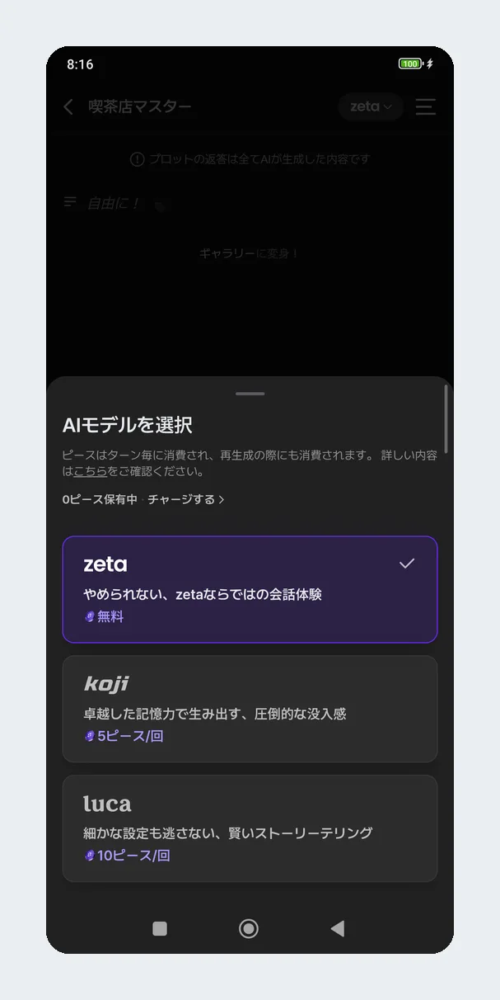

用了大半年 zeta，聊聊 AI 角色扮演里那些意料之外的变化
从 3.38 版本一路更到现在，zeta 这款 AI 角色扮演应用给我留下了不少反直觉的体验：模型切换省了 Piece，快照分享成了日常，自创角色却始终没坚持下来。
装zeta官网的 AI 角色扮演应用到现在快九个月了，从 2026 年 6 月的 3.38 版本一路跟着更新到秋季。当初从官方下载拿到它纯粹是想找个能"陪聊"的东西解闷，没抱什么期待——AI 角色扮演嘛，大同小异，免费能用就行。结果这大半年下来，想法变了好几轮。
哪点越用越顺手
模型切换这个设计，是我从"觉得麻烦"到"离不开"的典型。
刚上手的时候不知道聊天中途能换模型，每次想试 koji 或者 luca 都得新开一段对话。后来偶然点了一下聊天界面顶部那个默认显示"zeta"的模型名，才发现原来是个面板入口——同一段对话里免费档、koji、luca 三档直接切换，之前白开了多少次新对话。
现在养成了习惯：日常闲聊、随便玩玩用免费档 zeta，速度最快零成本；碰到想认真推进的剧情，特别是角色需要记住大量设定细节的时候，切 koji 花几个 Piece 换个好记性；至于 luca，只在极少数长线剧情里开一次——回复长度是免费档的两倍但速度最慢，每天重度用的话月开销不是小数。演完重点戏再切回免费档，省了不少 Piece。

另一个越用越舒服的变化是社区功能从无到有的补全。7 月版本陆续上了评论、点赞，8 月有了个人主页封面图和创作者动态，9 月又加了快照分享——对话里任何一个瞬间，点一下就能变成一张插画，贴去评论区或者存进自己的快照库。说实话这功能刚上的时候我觉得花里胡哨，现在随手截一张对话瞬间比打字描述快多了，看别人剧情的时候也靠快照快速扫亮点。
哪点越用越烦
订阅取消这件事，我踩过一次坑。
zeta pass 是商店级订阅，退订不在应用里点，要去 Google Play 或者苹果系统设置里操作。我当初以为卸载应用就完了，结果下个月照常扣款，折腾了半天才搞明白 Google Play 官方明确说过卸载不等于退订。更烦的是取消之后权益保留到本期结束，这点倒是合理，但每月 200 Piece 没花完的部分跟着期作废——退订前忘了花，眼睁睁看着过期。
还有更新后的偶发白屏。9 月下旬那波稳定性修复之前，有几次更新完打开就是白屏，杀后台重开没用，清缓存才救回来。对话数据是云端同步的这点倒是让人安心，重装也不丢档，但每次更完还是要盯着看几秒才放心。
说个反直觉的：免费获得 Piece 的渠道基本没有。官方活动偶尔送一点，但常规来说只能买。我原来以为 AI 对话多少会送点币让你体验高级档，结果 zeta 的策略就是让你实打实掏钱，Piece 余额不足选高级模型直接弹充值提示，半点不含糊。
哪个功能成了每天离不开的
快照分享。真的没想到这个功能能变成刚需。
之前看别人推剧情，要么是长篇截图拼起来，要么是打字复述——快照一下解决了。对话里某个角色说了句特别好的台词、某个场景的描写很有画面感，点一下就生成插画，存库或者贴评论区都行。现在每天打开 zeta 先翻一圈快照墙，比看文字快多了。
那有没有碰都没再碰的？自创角色。
试过一次，后来去zeta文档翻了 Intro 写法的指引才动的手，写了一条旁白加一条台词，朋友试玩说"能想象画面"。但写了 Intro 只是第一步，后面的 Prompt、设定、剧情大纲才是真功夫。三两句开场容易，撑起一条完整剧情没那个耐心。现在偶尔翻翻别人写的自创剧情，感叹作者精力好，但自己是真碰不动了。
观感修正
这大半年让我重新想了两个当初想当然的判断。
第一个：免费档够用吗？当初以为免费能用就行，现在发现 koji 的记忆力在某些场景下真的不一样。有一次在免费档聊了二十多轮，角色突然忘了之前说过的一个伏笔，切 koji 续上之后记得清清楚楚。不是说每段对话都要 koji，但有那种"不能忘"的剧情，多花几个 Piece 是值的。
第二个：自创角色很简单？当初看别人的剧情觉得不就是写几段话嘛。自己动手才发现 Intro 那三句才是难的——要在一条旁白里交代清楚在哪里、你和角色什么关系、刚刚发生了什么，还要让第一句台词自带钩子让玩家能接。写世界观谁都会，但把镜头压缩到"此刻"这两到四句里，比想象中难太多。
去留结论
不会卸载。Piece 还在续，虽然用量比最开始多了不少，但快照和模型切换这俩功能已经成了日常。
什么信号出现就该换了？大概是 Piece 涨到一个月用不起，或者免费档的质量明显下降到聊不下去。目前还没看到这个迹象——秋季这波更新在补社区和视觉小说模式，方向是对的。
长期用下来最大的感受是：AI 角色扮演这个东西，体验好不好往往不在模型本身，而在那些"能不能省点事"的小设计。模型切换省了开新对话的麻烦，快照省了截图拼图的麻烦，Piece 的消耗机制逼着你学会取舍。这些东西不是第一眼能看到的，得日子久了才显出好来。对了，我整理的一些 zeta 实用心得分别同步在了GitHub、Gitee 和 GitCode 三个仓库，不同网络环境都能访问。